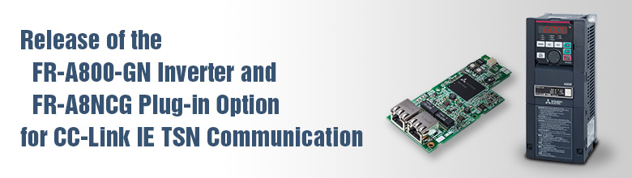
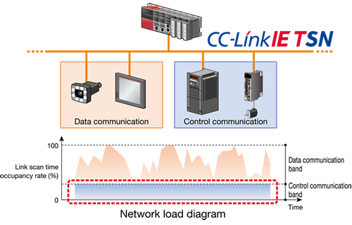
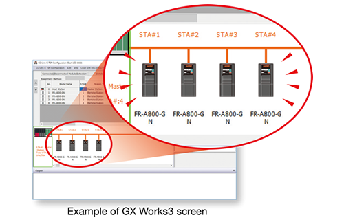

Inverters-FREQROL Recommended products

FR-A800-GN Inverter and FR-A8NCG Plug-in Option for CC-Link IE TSN Communication Function

Features
CC-Link IE TSN communication
- With the CC-Link IE TSN (Time Sensitive Networking) communication function, data can be transmitted to IT systems while performing real-time cyclic communication control.

- CC-Link IE TSN is also supported by FR-A800/FR-F800 standard inverters with the plug-in option FR-A8NCG.
Merits
Startup time reduction
- Station numbers are easily set with rotary switches.
Automatic detection of the network configuration by the engineering software (GX Works3) reduces the startup time.
Problems at startup such as line faults can be discovered at a glance with the diagnostic function.

Improved maintainability
- Time synchronization allows for real-time monitoring.
This enables trouble analysis to be performed right after an error has occurred. - FR Configurator2 can be connected via Ethernet, which makes maintenance work easier.
Communication specifications
The communication specification varies depending on the specification of the master.
| Item | Description | |
|---|---|---|
| Transmission speed | 1 Gbps | |
| Minimum synchronization cycle | 125.00 μs | |
| Authentication class | Authentication class B | |
| Synchronization function | Time sharing method | |
| Communication method | Compliant with IEEE 802.1AS and IEEE 1588v2 | |
| Maximum number of connected units | 121 units (sum of master and slave stations) | |
| Topology | Line, star*1、ring*2、or a combination of line and star | |
| Connection cable | Ethernet cable (IEEE 802.3 1000BASE-T compliant cable or ANSI/TIA/EIA-568-B (Category 5e) compliant shielded 4-pair branched cable) |
|
| Connector | Shielded RJ-45 | |
| Node type | Remote station | |
| Maximum distance between nodes | 100m | |
| Maximum number of branches | No upper limit within the same Ethernet system | |
| Maximum cyclic size (of one node) |
RX | 64 bits |
| RY | 64 bits | |
| RWr | 128 words | |
| RWw | 128 words | |
*1：To connect only the authentication class B devices in the wye connection, use a CC-Link IE TSN compatible switching hub (TSN hub).
*2：Ring topology will be supported later.